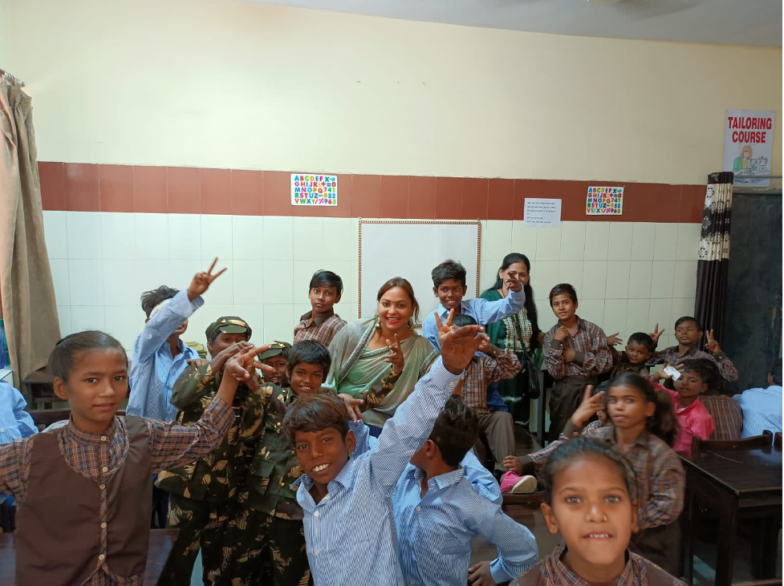

Leading Consulting Projects at ZS Associates
The seminars I facilitated covered a range of topics related to career development, including resume writing, interviewing skills, networking, job search strategies, and career planning. I structured the seminars as interactive workshops, incorporating hands-on activities, group discussions, and real-world examples to help students develop practical skills and knowledge.
As a mentor to engineering students, I provided guidance and support to help them navigate their academic and professional paths. This included helping students explore their career interests, identifying opportunities for internships and experiential learning, providing advice on resume and cover letter writing, and conducting mock interviews to help students prepare for job interviews.
Throughout my mentoring and coaching work, I focused on building strong relationships with students and creating a supportive environment where they could feel comfortable asking questions, seeking feedback, and sharing their experiences. I also sought to provide resources and connections to help students connect with professionals in their field and build their networks.
Overall, my experience facilitating career development coaching seminars and mentoring engineering students has allowed me to develop a deep understanding of the challenges and opportunities facing students as they pursue their professional goals. I am passionate about helping students succeed and look forward to continuing to support them in their academic and career journeys.
Expert Career Coach and Mentor for Engineering Students
The seminars I facilitated covered a range of topics related to career development, including resume writing, interviewing skills, networking, job search strategies, and career planning. I structured the seminars as interactive workshops, incorporating hands-on activities, group discussions, and real-world examples to help students develop practical skills and knowledge.
As a mentor to engineering students, I provided guidance and support to help them navigate their academic and professional paths. This included helping students explore their career interests, identifying opportunities for internships and experiential learning, providing advice on resume and cover letter writing, and conducting mock interviews to help students prepare for job interviews.
Throughout my mentoring and coaching work, I focused on building strong relationships with students and creating a supportive environment where they could feel comfortable asking questions, seeking feedback, and sharing their experiences. I also sought to provide resources and connections to help students connect with professionals in their field and build their networks.
Overall, my experience facilitating career development coaching seminars and mentoring engineering students has allowed me to develop a deep understanding of the challenges and opportunities facing students as they pursue their professional goals. I am passionate about helping students succeed and look forward to continuing to support them in their academic and career journeys.

Experienced NGO Leader and Educator for Women and Children's Development
As a team leader, I worked with an NGO that was dedicated to the development and rehabilitation of underprivileged women and children. Our organization focused on providing education and support to women and children from disadvantaged backgrounds who might not have access to quality education and training.
In my role, I was responsible for overseeing a team of 10 volunteer educators. Our team worked together to develop and deliver educational programs that were tailored to the specific needs of our target audience. We focused on providing basic literacy skills, life skills training, and vocational training to help these women and children become more self-sufficient and improve their economic opportunities.
One of the biggest challenges we faced as a team was developing and delivering effective educational programs that could meet the diverse needs of our target population. We had to take into account the different cultural backgrounds, educational levels, and learning styles of the women and children we were working with, and develop programs that were inclusive and accessible to everyone.
To address these challenges, we worked closely with our partner organizations and community leaders to identify the specific needs of the women and children in our target population. We also developed a curriculum that was flexible and adaptable, so that we could make adjustments as we learned more about the needs and interests of our participants.
As a team leader, I also played an important role in managing the volunteers and ensuring that everyone was working effectively and efficiently. This involved coordinating schedules, providing training and support, and helping to resolve any issues or conflicts that arose.
Overall, my experience leading a team of volunteers in an NGO dedicated to the development and rehabilitation of underprivileged women and children was a rewarding and fulfilling experience. It taught me valuable leadership and management skills, and gave me the opportunity to make a positive impact in the lives of those who are most in need.